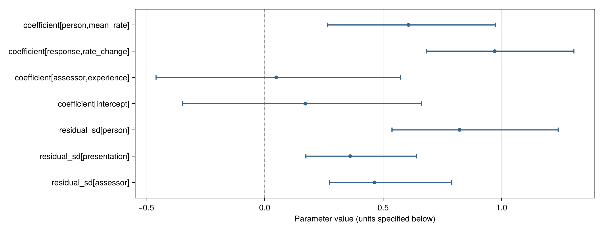
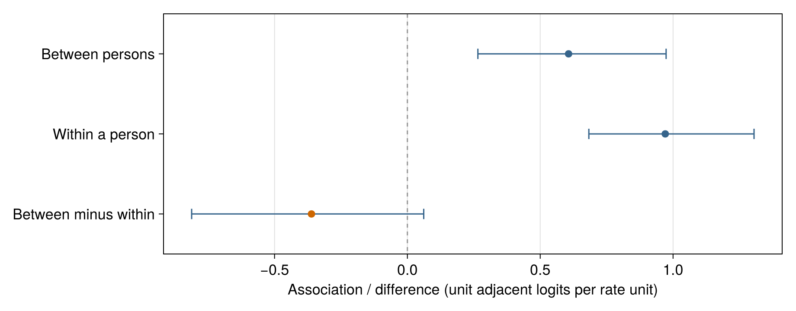
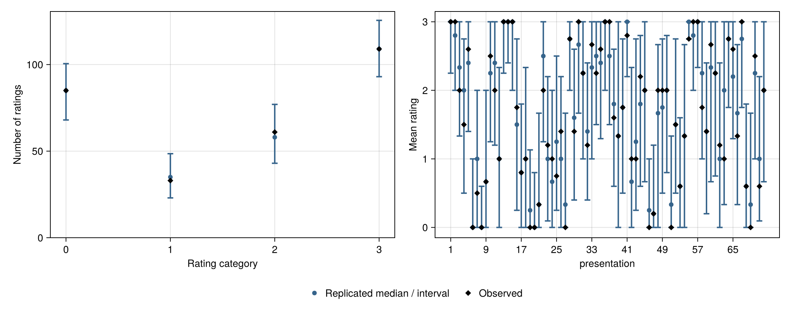
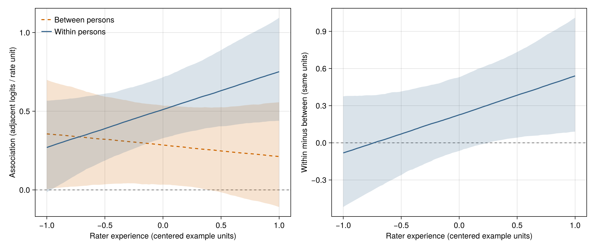
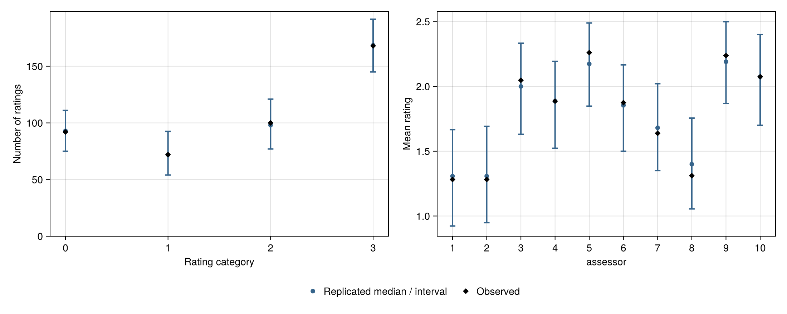

Separate Between-Person and Within-Person Associations
Does a faster speaker tend to receive higher ratings? Does a speaker receive higher ratings when speaking faster than their own observed average? These are different questions. This scalar model estimates both associations, together with variation among people, performances and raters.
Declare what belongs to a performance
Use one row per rating. Each talk ID belongs to one speaker; its rate must be identical across raters. experience belongs to the rater. A person's mean rate uses each distinct observed talk once, even if some talks have more ratings.
using BayesianMGMFRM, JSON3
using BayesianMGMFRM.Legacy
using Distributions: Normal, LogNormal
input = JSON3.read(read(joinpath(pkgdir(BayesianMGMFRM),
"examples", "data", "repeated_ratings.json"), String))
ratings = Dict{Symbol,Vector}(Symbol(k) => collect(v) for (k,v) in pairs(input))
spec = mfrm_spec(ratings;
person=:speaker, performance=:talk, score=:rating,
facets=(presentation=:talk, assessor=:judge, prompt=:prompt),
steps=:global, category_levels=0:3,
decompose=(rate=(between=:mean_rate, within=:rate_change),),
predictors=(person=(mean_rate=Normal(0,.6),),
response=(rate_change=Normal(0,.6),),
assessor=(experience=Normal(0,.6),)),
population=(person=LogNormal(log(.6),.45),
presentation=LogNormal(log(.4),.45),
assessor=LogNormal(log(.35),.45)),
prior_sd=(facets=(prompt=0.,), step=.45), intercept=Normal(0,.8))
validate_design(spec)
design_summary(spec).decompositionThe example contains artificial data in arbitrary rate units; these priors are explicit example choices, not defaults for speaking research. decompose does not standardize, grand-mean center, detrend, or add a random effect. The separate presentation declaration adds the performance residual. Its positive value lowers ratings, like other named facet effects; performance quality has the opposite sign. The names presentation and assessor are user choices.
Fit and compare the two associations
Start Julia with --threads=4 for four concurrent chains.
result = fit(spec; chains=4, warmup=600, ndraws=1000, seed=7102,
chain_execution=:threads, max_parallel_chains=4)
report = fit_report(result; parameters=["coefficient[person,mean_rate]",
"coefficient[response,rate_change]", "coefficient[assessor,experience]",
"residual_sd[person]", "residual_sd[presentation]", "residual_sd[assessor]"])
difference = BayesianMGMFRM.posterior_contrast(result;
left="coefficient[person,mean_rate]", right="coefficient[response,rate_change]")
ppc = predictive_check(result; ndraws=500, seed=8101, groupby=:presentation)
save_fit("repeated-fit.jls", result)
restored = load_fit("repeated-fit.jls")The between coefficient compares people with different observed mean rates. The within coefficient describes deviations from that person's observed mean, conditional on the declared effects. Both are changes in unit adjacent logits per source unit, not score points. Use the joint posterior difference to compare coefficients; separate interval overlap or separate significance does not answer that question. Only a declared same-source between/within pair has assured matching units for this contrast. Inspect whole-fit diagnostics and focal MCSE before interpretation.

One artificial repeated-performance pilot. Points are posterior medians; bars are 95% equal-tailed credible intervals. Residual SDs are in unit adjacent logits; coefficient units are logits per supplied predictor unit (intercept: logits). This figure is not an empirical result about speaking speed or a recovery study.

The third interval uses paired draws from the joint posterior; it is not formed by subtracting marginal interval endpoints. Zero marks equal conditional associations. Here the between-minus-within median is −0.361, with a 95% interval [−0.812, 0.062]. The interval includes zero: this single example does not decisively separate the associations. Its endpoint MCSEs are 0.012 and 0.017; no precision threshold was applied. The whole-fit maximum R̂ is 1.004, minimum bulk ESS is 1,891, and retained divergences are zero. These are numerical diagnostics, not calibration evidence.

This is a posterior predictive check: replicated categories are generated from the fitted posterior, conditional on the observed people, talks and raters. Black diamonds are observed statistics; blue points/bars are medians and 95% pointwise predictive intervals from 500 replicates (not simultaneous bands). Aggregate category agreement can miss temporal, within-person or rater-specific misfit.
Saved reports can be plotted without estimation: load repeated-posterior.json or repeated-ppc.json from examples/reports, using the corresponding checksum in repeated-sha256.json, then call plot(stored; kind=:posterior) or :predictive after loading CairoMakie. The visualization guide explains the common saved-report workflow.
For prior/PPC, chain traces and category-probability figures, use the saved diagnostic walkthrough. It requires no refitting.
Prediction and limits
Known-performance prediction preserves training means even for a one-talk subset. Supply original rate and owner attributes. Changing a stored talk's rate or owner, inventing a new talk, or supplying inconsistent derived columns is refused. Saving retains raw rates, derived columns, ownership, equal-performance weighting and means.
The observed mean is a finite sample average, not a latent error-free habitual rate. Missing performances, time trends, practice effects and changing tasks can change its interpretation. Centering alone does not remove these influences or establish causality. Within deviations need not sum to zero across rating rows when the number of raters varies. Different performance counts also give differently precise observed means; this model does not correct that measurement error.
Repeated performances per person and repeated, overlapping ratings are needed to inform the separate SDs. The structural screen rejects coincident covariance components and zero/aliased predictor columns; passing it does not prove sufficient information or global identification. One performance per person cannot identify separate person and performance variances. This example uses shared category support; criterion-specific effects and mixed supports require explicit declarations. Unit slopes and multiplier remain fixed; random slopes, latent means and temporal dynamics are separate extensions. See model assumptions.
Mathematical connection
For person p, let mp be the mean over their Jp unique observed performances and wpj = xpj − m_p. The adjacent logit for categories k and k−1 is
\[\log\frac{P(Y_{pjr}=k)}{P(Y_{pjr}=k-1)}= \alpha+\beta_B m_p+u_p+\beta_W w_{pj}-d_{pj}-\gamma e_r-a_r-\tau_k.\]
Population residuals u, d and a are independent zero-mean Gaussian variables with explicit SD priors. Steps are centered; the singleton prompt effect in this example is zero. The identity βB m + βW(x−m) = βW x + (βB−β_W)m explains the contrast. Rewriting the coefficients and assigning fresh independent priors would generally change the joint prior; the implementation keeps the declared coordinates.
Enders and Tofighi (2007), pp. 130–132 explain the distinct within/between questions and coefficient contrast. Their linear Gaussian examples motivate the decomposition; their estimation and variance results are not proofs for this crossed-rater ordinal model.
Does rater experience change either association?
Add two response products: experience * mean_rate and experience * rate_change, retaining the main effects above. A single experience * rate term constrains the two interaction coefficients to be equal. The supplied recipe constructs products from the stored unique-performance means:
include(joinpath(pkgdir(BayesianMGMFRM), "examples", "repeated_moderation.jl"))
input = JSON3.read(read(joinpath(pkgdir(BayesianMGMFRM),
"examples", "data", "moderation_ratings.json"), String))
ratings = Dict{Symbol,Vector}(Symbol(k) => collect(v) for (k,v) in pairs(input))
spec = RepeatedModerationExample.specification(ratings)
# New estimation is optional; the plotted report is already supplied.
result = fit(spec; chains=4, warmup=600, ndraws=1000, seed=9216,
target_accept=.9, max_depth=10, chain_execution=:threads, max_parallel_chains=4)
report = RepeatedModerationExample.report(result)The conditional slopes are beta_B + delta_B * experience and beta_W + delta_W * experience. The recipe compares them using paired joint draws, including coefficient covariance. Its explicit numeric products are ordinary predictors, not automatic formula terms: recompute them consistently for new data. The existing known-owner prediction restrictions still apply.

One artificial dataset: 36 people, 108 performances, 10 raters, 432 ratings. Lines are posterior medians; shading is pointwise 95% CrIs in adjacent logits per rate unit, conditional on the model. Experience is centered in arbitrary example units. These are not simultaneous bands or new-rater predictive intervals. At experience zero, within-minus-between is 0.226 [−0.065, 0.530]; at experience one, it is 0.541 [0.090, 1.010]. However, the interaction difference itself is 0.312 [−0.015, 0.655]: the second interval above does not establish moderation. That last interval also misses the generating difference 0.8. This single example is not evidence of calibrated coverage or empirical effects.
Whole-fit maximum R̂ is 1.0044, minimum bulk ESS is 1,640, and retained divergences are zero. The 18 declared focal quantities pass mean-MCSE/SD and endpoint-MCSE/ interval-width limits of .05. Only experience −1, 0 and 1 received these screens. Eleven constant-rating pattern warnings remain in the reports; numerical qualification does not erase them.

This posterior predictive check uses 500 replicates conditional on observed people, performances and raters. The left panel shows category counts; the right shows mean ratings for each rater. Diamonds are observed statistics; points and bars are predictive medians and pointwise 95% intervals. Aggregate or rater-level agreement alone does not establish adequacy. Predictive endpoint MCSE is unassessed.
To redraw the slope figure without fitting or generating predictions:
using CairoMakie
root = joinpath(pkgdir(BayesianMGMFRM), "examples")
hashes = JSON3.read(read(joinpath(root, "reports", "moderation-sha256.json"), String))
stored = load_report(joinpath(root, "reports", "moderation-posterior.json");
expected_sha256=hashes["moderation-posterior.json"])
include(joinpath(root, "repeated_moderation_plot.jl"))
RepeatedModerationPlot.figure(stored)These are scoped example recipes using the existing API, not a new generic interaction or plotting API. Ten distinct raters remain ten sources of experience information, despite 432 ratings. Random slopes, latent person means, causal moderation and arbitrary criterion combinations are not established here.